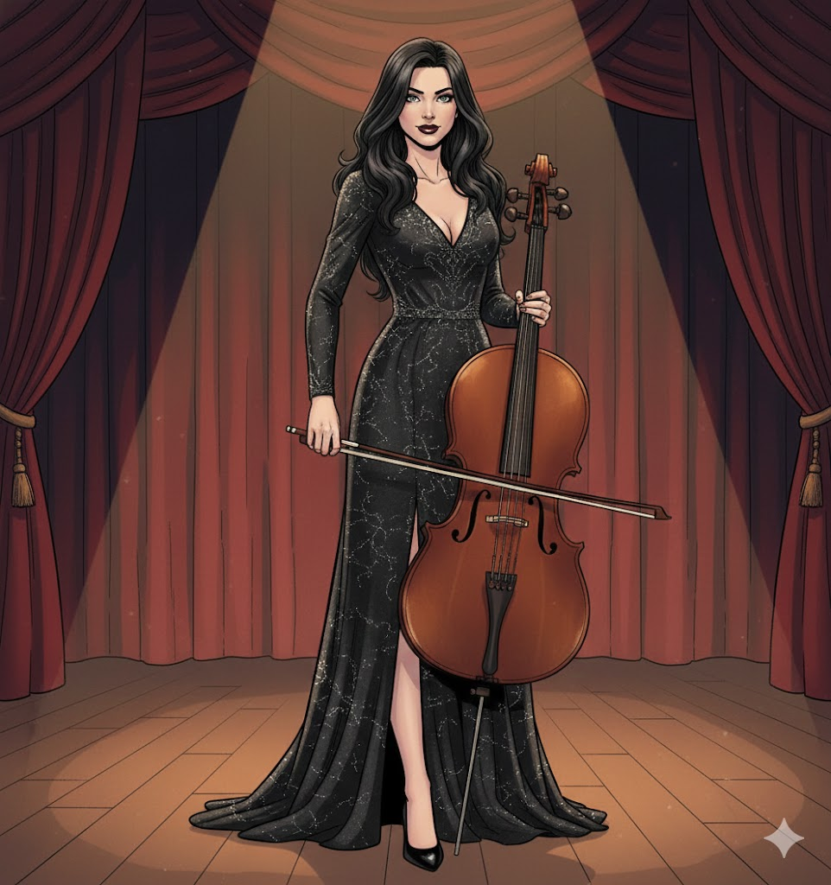

Robert
The rider, builder, survivor, and dreamer who refuses to accept that the future must remain a wasteland.
A cinematic post-apocalyptic novel about survival, passion, memory, and the turquoise fortress that becomes a symbol of hope after the collapse of civilization.

Robert rides through the ruins on an old motorcycle, searching for people who still believe that a better world can be built. His dream is a fortress-city — a turquoise refuge called Utopia — but every dream in this broken world must face fear, ambition, passion, betrayal, and the wounds of memory.
Editorial status: Chapter 1 is installed in polished English. The remaining chapter pages are designed and ready to receive the publication-ready English translation as we continue the novel chapter by chapter.
The rider, builder, survivor, and dreamer who refuses to accept that the future must remain a wasteland.

A figure of beauty, memory, art, and emotional force, connected to Robert’s deepest hope and pain.
The turquoise fortress is not only architecture. It is the color of protection, renewal, and a society that still wants to believe.